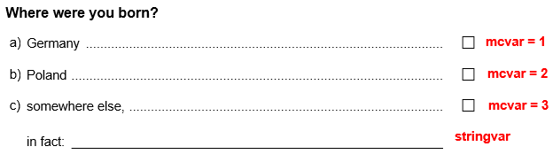
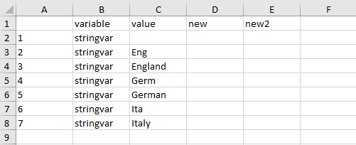
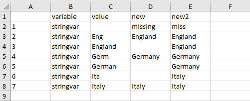

Recoding a forced choice item with a text field
Benjamin Becker, Johanna Busse
2025-07-17
Source:vignettes/recoding_forcedChoice.rmd
recoding_forcedChoice.rmdForced choice items are multiple choice items with exclusive answer options (only one option can be chosen). If a forced choice item is administered, sometimes not all possible answers can be covered by predefined response options. In such cases, often an additional response option (e.g. “other option”, “something else”, …) is given accompanied by an open text field. An example of such a multiple choice item is asking for the birthplace of a person:

However, in the resulting data set such an item will often be stored as two separate variables: a numeric variable with value labels (containing the existing response options) and a character variable (containing the answers in the text field). For data analysis, usually a single numerical and labeled variable is desirable. Often the following steps are required:
- recode the character variable manually (e.g. to eliminate spelling mistakes)
- transform open answers which refer to existing response options (e.g. if a test taker overlooked a response option)
- summarize both remaining variables into a single numerical, labeled variable
To illustrate the steps we have implemented a small SPSS
example data set in this package. The data set can be loaded using the
import_spss() function. For further information on
importing SPSS data see import_spss: Importing data from
‘SPSS’. Note that the data set is a minimal working example,
containing only the required variables for this illustration.
library(eatGADS)
data_path <- system.file("extdata", "forcedChoice.sav", package = "eatGADS")
gads <- import_spss(data_path)
# Show example data set
gads
#> $dat
#> ID mcvar stringvar
#> 1 1 3
#> 2 2 2 Italy
#> 3 3 3 England
#> 4 4 3 Ita
#> 5 5 3 Eng
#> 6 6 NA German
#> 7 7 1 Germ
#> 8 8 2
#> 9 9 3
#> 10 10 3 Eng
#>
#> $labels
#> varName varLabel format display_width labeled value valLabel missings
#> 1 ID <NA> F8.0 NA no NA <NA> <NA>
#> 2 mcvar <NA> F8.2 NA yes 1 Germany valid
#> 3 mcvar <NA> F8.2 NA yes 2 Poland valid
#> 4 mcvar <NA> F8.2 NA yes 3 other valid
#> 5 mcvar <NA> F8.2 NA yes -99 missing miss
#> 6 stringvar <NA> A7 NA no NA <NA> <NA>
#>
#> attr(,"class")
#> [1] "GADSdat" "list"The variable names of the data set above are connected to the forced choice question as indicated:

Preparing the data set
As illustrated, data can be loaded into R in the
GADSdat format via the functions
import_spss(), import_DF() or
import_raw(). Depending on the original format, omitted
responses to open text fields might be stored as empty strings instead
of NAs. In these cases, the recode2NA()
function should be used to recode these values to NA. Per
default, matching strings across all variables in the data set are
recoded. Specific variables selection can be specified using the
recodeVars argument. Note that the function only performs
recodings to exact matches of a single, specific value (in our example
"").
gads <- recode2NA(gads, value = "")
#> Recodes in variable ID: 0
#> Recodes in variable mcvar: 0
#> Recodes in variable stringvar: 3Creating and editing a lookup table
With createLookup(), you can create a lookup table which
allows recoding one or multiple variables.
You can choose which string variables in a GADSdat object
you would like to recode by using the recodeVars argument.
The resulting lookup table is a long format data.frame with
rows being variable x value pairings. In case you want to sort the
output to make recoding easier, the argument sort_by can be
used. Extra columns can be added to the lookup table by the argument
addCols (but can also be added later manually e.g. in
Excel). The respective column names are irrelevant and just for
convenience purpose.
lookup <- createLookup(GADSdat = gads, recodeVars = "stringvar", sort_by = 'value',
addCols = c("new", "new2"))
lookup
#> variable value new new2
#> 1 stringvar <NA> NA NA
#> 2 stringvar Eng NA NA
#> 3 stringvar England NA NA
#> 4 stringvar Germ NA NA
#> 5 stringvar German NA NA
#> 6 stringvar Ita NA NA
#> 7 stringvar Italy NA NANow you have to add the desired values for recoding. You should use
(a) the existing value labels of the corresponding numerical, labeled
variable and (b) consistent new values that can serve as value labels
later. Spelling mistakes within the recoding will result in different
values in the output!
To fill in the columns you could use R directly to modify
the columns. Alternatively, we recommend using
eatAnalysis::write_xlsx() to create an Excel file in which
you can fill in the values.
# write lookup table to Excel
eatAnalysis::write_xlsx(lookup, "lookup_forcedChoice.xlsx")
After filling out the Excel sheet the lookup table might look like this:

The Excel file can be read back into R via
readxl::read_xlsx(). Detailed information on how missing
values should be recoded is provided in the last section of this
vignette.
If you have more than one person working on the variable or if you
want to use templates, you may have 2 different possible recode values
(in our example: new and new2) . You can fill
in both in the lookup table and then choose which one you want to
prioritize later.
# read lookup table back to R
lookup <- readxl::read_xlsx("lookup_forcedChoice.xlsx")
lookup#> variable value new new2
#> 1 stringvar <NA> missing miss
#> 2 stringvar Eng England England
#> 3 stringvar England <NA> England
#> 4 stringvar Germ Germany <NA>
#> 5 stringvar German Germany Germany
#> 6 stringvar Ita <NA> Italy
#> 7 stringvar Italy Italy ItalyWe use the collapseColumns() function to get the correct
layout for the final lookup table. The function merges both columns
containing the new values. By using the prioritize argument
you can decide which column will be preferred. Only if there is an
NA in the prioritized column, the other column will be used
instead.
lookup_formatted <- collapseColumns(lookup = lookup, recodeVars = c("new", "new2"),
prioritize = "new")
lookup_formatted
#> variable value value_new
#> 1 stringvar <NA> missing
#> 2 stringvar Eng England
#> 3 stringvar England England
#> 4 stringvar Germ Germany
#> 5 stringvar German Germany
#> 6 stringvar Ita Italy
#> 7 stringvar Italy ItalyApply lookup to GADSdat
You perform the actual data recoding using the
applyLookup() function. It applies the recodes defined in
the lookup table. This means that if the lookup table was created for
multiple variables, applyLookup() performs recoding for all
of these variables simultaneously. If you define a suffix,
the old variable(s) will not be overwritten.
gads_string <- applyLookup(GADSdat = gads, lookup = lookup_formatted, suffix = "_r")
#> No rows removed from meta data.
#> Adding meta data for the following variables: stringvar_r
gads_string$dat
#> ID mcvar stringvar stringvar_r
#> 1 1 3 <NA> missing
#> 2 2 2 Italy Italy
#> 3 3 3 England England
#> 4 4 3 Ita Italy
#> 5 5 3 Eng England
#> 6 6 NA German Germany
#> 7 7 1 Germ Germany
#> 8 8 2 <NA> missing
#> 9 9 3 <NA> missing
#> 10 10 3 Eng EnglandIntegrate character and numeric variable
The next step is to integrate the string variable into the integer
via the collapseMC_Text() function. With
mc_var and text_var we specify the variables
used for recoding. With the mc_code4text argument we
specify the value label of mc_var which indicates that
text_var contains valid information (in our example
"other"). If the mc_var is missing,
text_var is also utilized (e.g. row 6). If there is a valid
value in mc_var other than the code for
mc_code4text, information in text_var is
ignored (e.g. row 2). New value labels are created for entries in
text_var without corresponding value labels. The new value
labels are ordered alphabetically and inserted after the already
existing ones. Additional information on how missings are treated by the
function can be found in the last section of the vignette.
Note that in contrast to createLookup(),
collapseColumns() and applyLookup() this
function only works on a single forced choice variable pair. Integrating
multiple variable pairs has to be performed in separate steps.
gads_final <- collapseMC_Text(GADSdat = gads_string, mc_var = "mcvar",
text_var = "stringvar_r", mc_code4text = "other",
var_suffix = "_r", label_suffix = "(recoded)")
#> No rows removed from meta data.
#> Adding meta data for the following variables: mcvar_r
gads_final$dat
#> ID mcvar stringvar stringvar_r mcvar_r
#> 1 1 3 <NA> missing -99
#> 2 2 2 Italy Italy 2
#> 3 3 3 England England 4
#> 4 4 3 Ita Italy 5
#> 5 5 3 Eng England 4
#> 6 6 NA German Germany 1
#> 7 7 1 Germ Germany 1
#> 8 8 2 <NA> missing 2
#> 9 9 3 <NA> missing -99
#> 10 10 3 Eng England 4
extractMeta(gads_final, "mcvar_r")
#> varName varLabel format display_width labeled value valLabel missings
#> 8 mcvar_r (recoded) F8.2 NA yes 1 Germany valid
#> 9 mcvar_r (recoded) F8.2 NA yes 2 Poland valid
#> 10 mcvar_r (recoded) F8.2 NA yes 3 other valid
#> 11 mcvar_r (recoded) F8.2 NA yes -99 missing miss
#> 12 mcvar_r (recoded) F8.2 NA yes 4 England valid
#> 13 mcvar_r (recoded) F8.2 NA yes 5 Italy validcheckMissings() is a function for automatically setting
missing values in a GADSdat object. If new values should
receive missing codes, checkMissings() would be necessary.
However, in our example no new values representing missings have been
added, therefore the function does not change the GADSdat
object.
gads_final <- checkMissings(GADSdat = gads_final, missingLabel = "missing",
addMissingCode = TRUE, addMissingLabel = FALSE)
extractMeta(gads_final, "mcvar_r")
#> varName varLabel format display_width labeled value valLabel missings
#> 8 mcvar_r (recoded) F8.2 NA yes 1 Germany valid
#> 9 mcvar_r (recoded) F8.2 NA yes 2 Poland valid
#> 10 mcvar_r (recoded) F8.2 NA yes 3 other valid
#> 11 mcvar_r (recoded) F8.2 NA yes -99 missing miss
#> 12 mcvar_r (recoded) F8.2 NA yes 4 England valid
#> 13 mcvar_r (recoded) F8.2 NA yes 5 Italy validRemove variables from GADSdat
In a last step you can remove intermediate or superfluous variables
from the GADSdat object by using the function
removeVars().
gads_final <- removeVars(GADSdat = gads_final, vars = c("mcvar", "stringvar_r"))
#> Removing the following rows from meta data: mcvar, stringvar_r
#> No rows added to meta data.
gads_final$dat
#> ID stringvar mcvar_r
#> 1 1 <NA> -99
#> 2 2 Italy 2
#> 3 3 England 4
#> 4 4 Ita 5
#> 5 5 Eng 4
#> 6 6 German 1
#> 7 7 Germ 1
#> 8 8 <NA> 2
#> 9 9 <NA> -99
#> 10 10 Eng 4Missing value codes
In some scenarios, there might be conceptual differences between
missing codes in the data (e.g. invalid responses, item not
administered, omission). These conceptual differences might require
different integration of the two variables (numerical & labeled,
character) depending on the type of missing. In this section, we
illustrate how collapseMC_Text() behaves depending on how
missings are defined in the data.
To illustrate the described behavior, we have included an additional
SPSS data set in the package with a forced choice variable
pair including all possible value and missing combinations. The possible
values in the string variable are new valid, indicating an
arbitrary valid entry, NA indicating for example an
omission and special missing, indicating for example an
invalid entry.
data_path_miss <- system.file("extdata", "forcedChoice_missings.sav", package = "eatGADS")
gads_miss <- import_spss(data_path_miss)
gads_miss <- recode2NA(gads_miss, value = "")
#> Recodes in variable ID: 0
#> Recodes in variable mc: 0
#> Recodes in variable string: 4
# Show example data set
gads_miss
#> $dat
#> ID mc string
#> 1 1 2 new valid
#> 2 2 1 new valid
#> 3 3 -99 new valid
#> 4 4 -98 new valid
#> 5 5 2 <NA>
#> 6 6 1 <NA>
#> 7 7 -99 <NA>
#> 8 8 -98 <NA>
#> 9 9 2 special missing
#> 10 10 1 special missing
#> 11 11 -99 special missing
#> 12 12 -98 special missing
#>
#> $labels
#> varName varLabel format display_width labeled value valLabel missings
#> 1 ID <NA> F8.0 NA no NA <NA> <NA>
#> 2 mc <NA> F8.2 NA yes 1 valid valid
#> 3 mc <NA> F8.2 NA yes 2 other valid
#> 4 mc <NA> F8.2 NA yes -99 missing omitted miss
#> 5 mc <NA> F8.2 NA yes -98 special missing miss
#> 6 string <NA> A15 NA no NA <NA> <NA>
#>
#> attr(,"class")
#> [1] "GADSdat" "list"If both variables have valid but contradicting entries,
collapseMC_Text() prefers information from the numerical,
labeled variable (e.g. row 2). If both entries are missing, the behavior
of collapseMC_Text() depends on the missing type in the
character variable. If the missing is indicated via an explicit missing
definition (special missing in the example), this missing
code is preferred to missing codes from the numerical, labeled variable
(e.g. row 11). If the missing is indicated via an actual NA
in the character variable, the information from the numerical, labeled
variable is preferred (e.g. row 7).
# summarize numerical, labeled variable and character variable
gads <- collapseMC_Text(gads_miss, "mc", "string", mc_code4text = "other", "_r", "recoded")
#> No rows removed from meta data.
#> Adding meta data for the following variables: mc_r
gads$dat
#> ID mc string mc_r
#> 1 1 2 new valid 3
#> 2 2 1 new valid 1
#> 3 3 -99 new valid 3
#> 4 4 -98 new valid 3
#> 5 5 2 <NA> 2
#> 6 6 1 <NA> 1
#> 7 7 -99 <NA> -99
#> 8 8 -98 <NA> -98
#> 9 9 2 special missing -98
#> 10 10 1 special missing 1
#> 11 11 -99 special missing -98
#> 12 12 -98 special missing -98